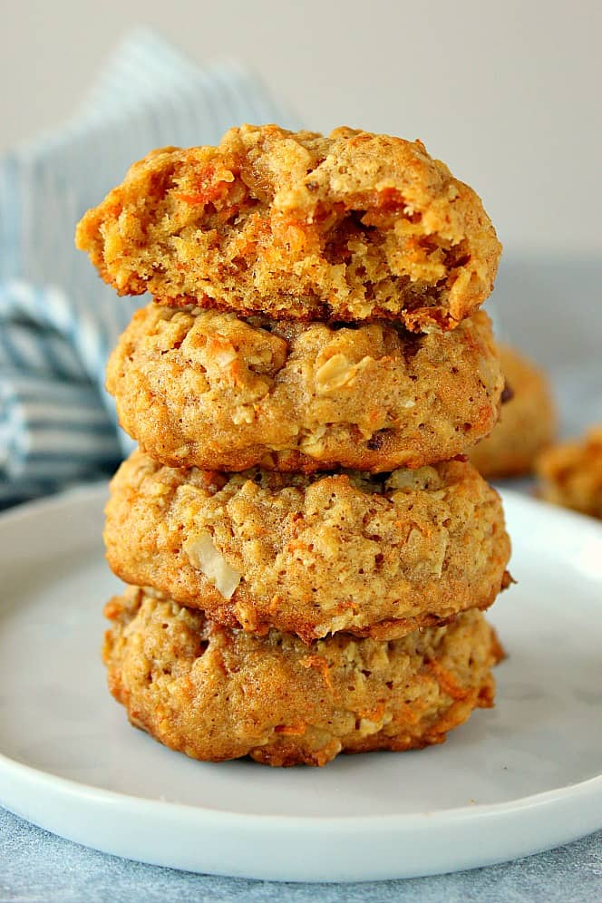

About this dish:
Oatmeal carrot cookies are a wholesome and delicious dessert option that are perfect for any occasion. These cookies are made with a combination of rolled oats, grated carrots, and warm spices such as cinnamon and nutmeg. Oatmeal carrot cookies are easy to make and are a great way to sneak in some extra veggies into your diet.
They're also a great option for those with dietary restrictions as they can be easily adapted to be gluten-free or vegan. These cookies are the perfect treat to satisfy any sweet tooth while still being a healthy option.
What you need:
- 1 ½ cup old-fashioned oats
- 1 cup all-purpose flour
- ¾ teaspoon baking powder
- ½ teaspoon baking soda
- ½ teaspoon ground cinnamon
- ¼ teaspoon nutmeg
- ¼ teaspoon ground ginger
- ⅛ teaspoon ground cloves
- ½ teaspoon vanilla
- ½ teaspoon salt
- ½ cup unsalted butter melted and cooled
- ¼ cup granulated sugar
- ½ cup packed brown sugar
- 1 large egg
- 1 cup shredded carrots (Shreed on the small hole side of your grater)
- ½ cup chopped nuts (optional)*
*You can also try some variations:
- add raisins and shredded coconut
- add drizzle or spread cream cheese frosting on each cookie
How to make:
- In a large mixing bowl, whisk together oats, flour, baking powder and soda, cinnamon, nutmeg, ginger, cloves and salt.
- In a medium mixing bowl, whisk cooled butter, granulated sugar and brown sugar. Add egg and vanilla and whisk well. Add carrots and nuts and stir in.
- Combine wet ingredients with ddry ingredients and stir until well incorporated.
- Cover bowl with cookie dough and chill for at least 2 hours.
- Preheat oven to 350° F. Line baking sheet with parchment paper.
- Scoop cookie dough with 1 ½ tablespoon size cookie scoop. Place 2" apart on sheet.
- Bake for 8 to 10 minutes. Nine minutes was my magic number.